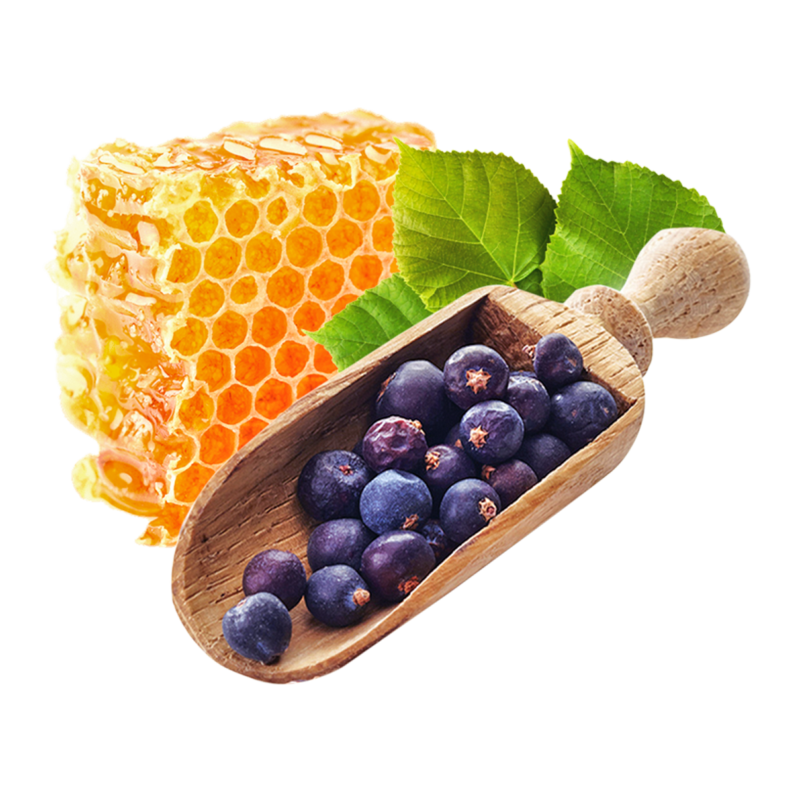
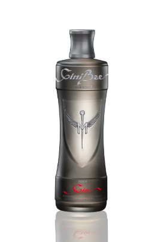
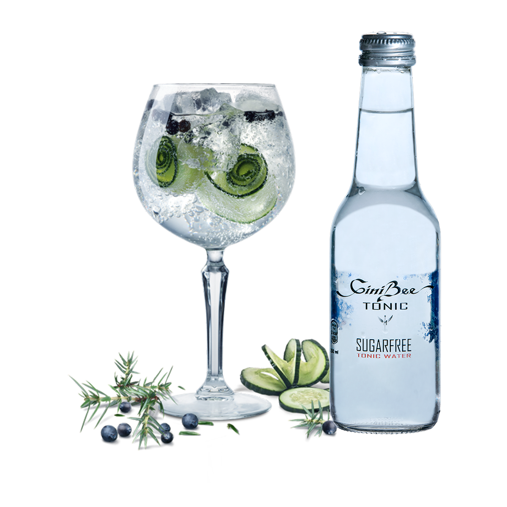

Po vsem svetu je znano, da je naša čebela Kranjska sivka (latinsko Apis mellifera carnica)
najmarljivejša med vsemi čebelami, poleg tega pa je tudi najprijaznejša do človeka.
GiniBee gin Premium in Unique se ponašata s svojim posebnim okusom, saj je vsaka šesta brinjeva jagoda namocena v med slovenskih čebel.
Poleg medu s svojo prisotnostjo dajejo GiniBee ginu poetsko noto tudi lipov list, vrtnica, ingver, pomaranca, kumara, limona in koriander.

GiniBee gin Premium se dodatno ponaša s svojo edinstvenostjo, saj ga bogati brandy,
ki je bil 3 leta staran v hrastovih sodih. GiniBee Premium je ustvarjen za zahtevne pivce gina,
ki si želijo le najboljše. Prav tako je po mnenju svetovnih poznavalcev in ocenjevalcev eden izmed
redkih ginov, ki za uživanje ne potrebujejo tonika.

GiniBee Tonic SUGAR FREE je prvi in edini slovenski tonik brez sladkorja. Zato ga samega ali
zmešanega z ginom GiniBee lahko pijemo brez slabe vesti. Prav tako je skrb na jutranji glavobol stvar preteklosti.
Produkte GiniBee smo skrbno razvijali več let z mislijo na vse ljubitelje gina - ocena je na vaši strani,
ponosno pa lahko poudarimo, da so nas okusi več kot zadovoljili.
Naj vam pridih Slovenije prinese neskončnost, užitek in svežino.